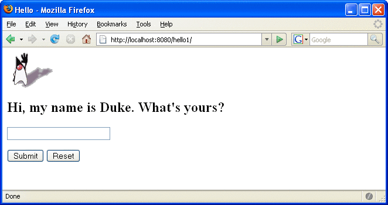

Web Modules
In the Java EE architecture, web components and static web content files such as images are called web resources. A web module is the smallest deployable and usable unit of web resources. A Java EE web module corresponds to a web application as defined in the Java Servlet specification.
In addition to web components and web resources, a web module can contain other files:
Server-side utility classes (database beans, shopping carts, and so on). Often these classes conform to the JavaBeans component architecture.
Client-side classes (applets and utility classes).
A web module has a specific structure. The top-level directory of a web module is the document root of the application. The document root is where JSP pages, client-side classes and archives, and static web resources, such as images, are stored.
The document root contains a subdirectory named WEB-INF, which contains the following files and directories:
Tag library descriptor files (see Tag Library Descriptors)
classes: A directory that contains server-side classes: servlets, utility classes, and JavaBeans components
tags: A directory that contains tag files, which are implementations of tag libraries (see Tag File Location)
lib: A directory that contains JAR archives of libraries called by server-side classes
If your web module does not contain any servlets, filter, or listener components then it does not need a web application deployment descriptor. In other words, if your web module only contains JSP pages and static files then you are not required to include a web.xml file. The hello1 example, first discussed in Packaging Web Modules, contains only JSP pages and images and therefore does not include a deployment descriptor.
You can also create application-specific subdirectories (that is, package directories) in either the document root or the WEB-INF/classes/ directory.
A web module can be deployed as an unpacked file structure or can be packaged in a JAR file known as a web archive (WAR) file. Because the contents and use of WAR files differ from those of JAR files, WAR file names use a .war extension. The web module just described is portable; you can deploy it into any web container that conforms to the Java Servlet Specification.
To deploy a WAR on the Application Server, the file must also contain a runtime deployment descriptor. The runtime deployment descriptor is an XML file that contains information such as the context root of the web application and the mapping of the portable names of an application’s resources to the Application Server’s resources. The Application Server web application runtime DD is named sun-web.xml and is located in the WEB-INF directory along with the web application DD. The structure of a web module that can be deployed on the Application Server is shown in Figure 3-5.
Figure 3-5 Web Module Structure

Packaging Web Modules
A web module must be packaged into a WAR in certain deployment scenarios and whenever you want to distribute the web module. You package a web module into a WAR by executing the jar command in a directory laid out in the format of a web module, by using the Ant utility, or by using the IDE tool of your choice. This tutorial shows you how to use NetBeans IDE or Ant to build, package, and deploy the sample applications.
To build the hello1 application with NetBeans IDE, follow these instructions:
Select File→Open Project.
In the Open Project dialog, navigate to:
tut-install/javaeetutorial5/examples/web/
Select the hello1 folder.
Select the Open as Main Project check box.
Click Open Project.
In the Projects tab, right-click the hello1 project and select Build.
To build the hello1 application using the Ant utility, follow these steps:
In a terminal window, go to tut-install/javaeetutorial5/examples/web/hello1/.
Type ant. This command will spawn any necessary compilations, copy files to the tut-install/javaeetutorial5/examples/web/hello1/build/ directory, create the WAR file, and copy it to the tut-install/javaeetutorial5/examples/web/hello1/dist/ directory.
Deploying a WAR File
You can deploy a WAR file to the Application Server in a few ways:
Copying the WAR into the domain-dir/autodeploy/ directory.
Using the Admin Console.
By running asadmin or ant to deploy the WAR.
Using NetBeans IDE.
All these methods are described briefly in this chapter; however, throughout the tutorial, you will use ant and NetBeans IDE for packaging and deploying.
Setting the Context Root
A context root identifies a web application in a Java EE server. You specify the context root when you deploy a web module. A context root must start with a forward slash (/) and end with a string.
In a packaged web module for deployment on the Application Server, the context root is stored in sun-web.xml.
To edit the context root, do the following:
Expand your project tree in the Projects pane of NetBeans IDE.
Expand the Web Pages and WEB-INF nodes of your project.
Double-click sun-web.xml.
In the editor pane, click Edit As XML.
Edit the context root, which is enclosed by the context-root element.
Deploying a Packaged Web Module
If you have deployed the hello1 application, before proceeding with this section, undeploy the application by following one of the procedures described in Undeploying Web Modules.
Deploying with the Admin Console
Expand the Applications node.
Select the Web Applications node.
Click the Deploy button.
Select the radio button labeled “Package file to be uploaded to the Application Server.”
Type the full path to the WAR file (or click on Browse to find it), and then click the OK button.
Click Next.
Type the application name.
Type the context root.
Select the Enabled box.
Click the Finish button.
Deploying with asadmin
To deploy a WAR with asadmin, open a terminal window or command prompt and execute
asadmin deploy full-path-to-war-file
Deploying with Ant
To deploy a WAR with the Ant tool, open a terminal window or command prompt in the directory where you built and packaged the WAR, and execute
ant deploy
Deploying with NetBeans IDE
To deploy a WAR with NetBeans IDE, do the following:
Select File→Open Project.
In the Open Project dialog, navigate to your project and open it.
In the Projects tab, right-click the project and select Undeploy and Deploy.
Testing Deployed Web Modules
Now that the web module is deployed, you can view it by opening the application in a web browser. By default, the application is deployed to host localhost on port 8080. The context root of the web application is hello1.
To test the application, follow these steps:
Open a web browser.
Enter the following URL in the web address box:
http://localhost:8080/hello1
Enter your name, and click Submit.
The application should display the name you submitted as shown in Figure 3-3 and Figure 3-4.
Listing Deployed Web Modules
The Application Server provides two ways to view the deployed web modules: the Admin Console and the asadmin command.
To use the Admin Console:
Open the URL http://localhost:4848/asadmin in a browser.
Expand the nodes Applications→Web Applications.
Use the asadmin command as follows:
asadmin list-components
Updating Web Modules
A typical iterative development cycle involves deploying a web module and then making changes to the application components. To update a deployed web module, you must do the following:
Recompile any modified classes.
If you have deployed a packaged web module, update any modified components in the WAR.
Redeploy the module.
Reload the URL in the client.
Updating a Packaged Web Module
This section describes how to update the hello1 web module that you packaged.
First, change the greeting in the file tut-install/javaeetutorial5/examples/web/hello1/web/index.jsp to
<h2>Hi, my name is Duke. What’s yours?</h2>
To update the project in NetBeans IDE:
Right-click on the project and select Build.
Right-click on the project and select Undeploy and Deploy.
To update the project using the Ant build tool:
Type ant to copy the modified JSP page into the build directory.
Type ant deploy to deploy the WAR file.
To view the modified module, reload the URL in the browser.
You should see the screen in Figure 3-6 in the browser.
Figure 3-6 New Greeting
Dynamic Reloading
If dynamic reloading is enabled, you do not have to redeploy an application or module when you change its code or deployment descriptors. All you have to do is copy the changed JSP or class files into the deployment directory for the application or module. The deployment directory for a web module named context-root is domain-dir/applications/j2ee-modules/context-root. The server checks for changes periodically and redeploys the application, automatically and dynamically, with the changes.
This capability is useful in a development environment, because it allows code changes to be tested quickly. Dynamic reloading is not recommended for a production environment, however, because it may degrade performance. In addition, whenever a reload is done, the sessions at that time become invalid and the client must restart the session.
To enable dynamic reloading, use the Admin Console:
Select the Applications Server node.
Select the Advanced tab.
Check the Reload Enabled box to enable dynamic reloading.
Enter a number of seconds in the Reload Poll Interval field to set the interval at which applications and modules are checked for code changes and dynamically reloaded.
Click the Save button.
In addition, to load new servlet files or reload deployment descriptor changes, you must do the following:
Create an empty file named .reload at the root of the module:
domain-dir/applications/j2ee-modules/context-root/.reload
Explicitly update the .reload file’s time stamp each time you make these changes. On UNIX, execute
touch .reload
For JSP pages, changes are reloaded automatically at a frequency set in the Reload Poll Interval field. To disable dynamic reloading of JSP pages, set the Reload Poll Interval field value to –1.
Undeploying Web Modules
You can undeploy web modules in four ways: you can use NetBeans IDE, the Admin Console, the asadmin command, or the Ant tool.
To use NetBeans IDE:
Ensure the Sun Java System Application Server is running.
In the Runtime window, expand the Sun Java System Application Server instance and the node containing the application or module.
Right-click the application or module and choose Undeploy.
To use the Admin Console:
Open the URL http://localhost:4848/asadmin in a browser.
Expand the Applications node.
Select Web Applications.
Click the check box next to the module you wish to undeploy.
Click the Undeploy button.
Use the asadmin command as follows:
asadmin undeploy context-root
To use the Ant tool, execute the following command in the directory where you built and packaged the WAR:
ant undeploy